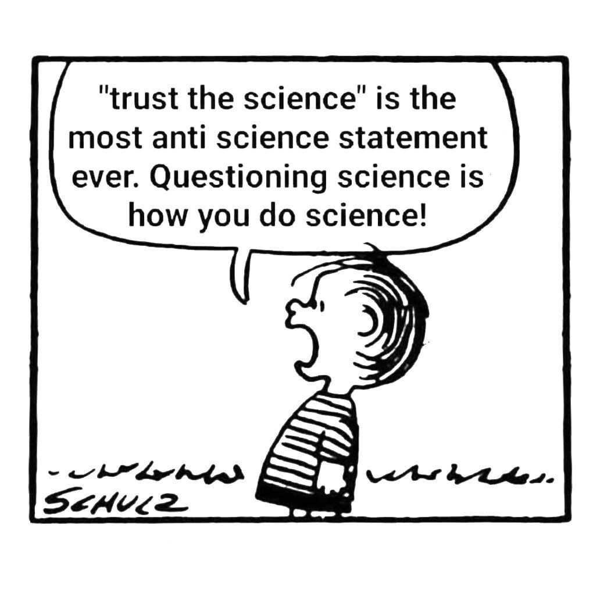
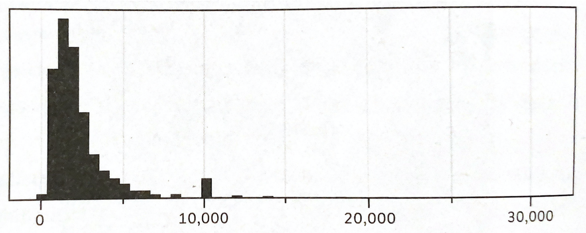
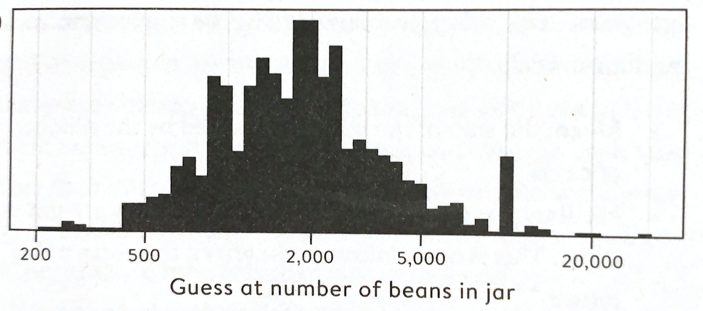
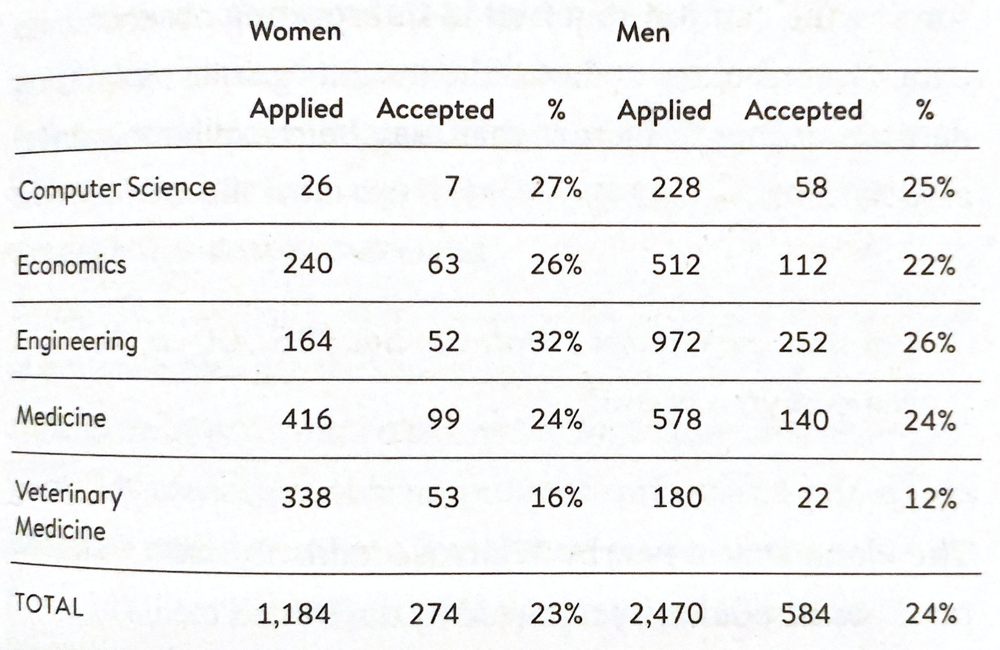
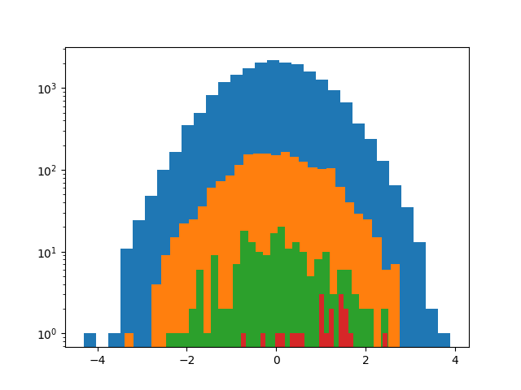
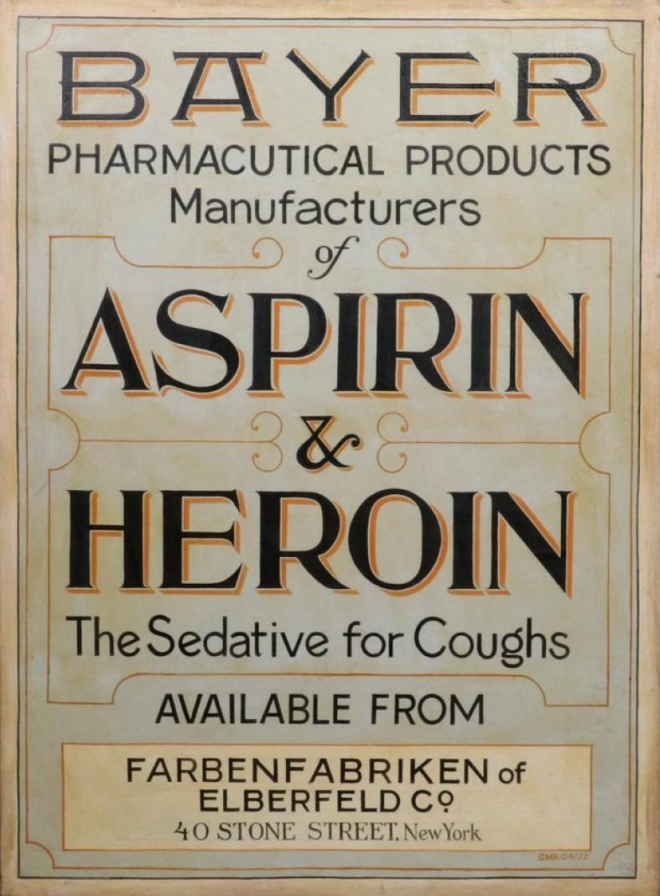

Statistics

2021
René Staritzbichler
Art of statistics
Describe reality by a few numbers
- mean / median / mode
- range / quantile / standard deviation
- distributions
- confidence / significance
- correlation
Location
- mean: average income
- median: income of average person
- median = 50th percentile
- mode: most common income
- normal distribution: mean, median and mode are the same
How to calculate location
- mean: \[ \bar{x} = \frac{1}{n} \sum_{i=1}^n x_i = \frac{1}{n}( x_1 + x_2 + ... + x_n) \]
- median:
- sort your population by income
- person in the middle (50%)
Spread or width
- range:
unsymmetric data, sensitive to extremes
- standard deviation:
symmetric, sensitive
- inter quartile range:
unsymmetric, insensitive
How to calculate width
- standard deviation (represents 68%): \[ \sigma = \sqrt{ \frac{1}{n} \sum_{i=1}^n (\bar{x} - x_i)^2 } \]
- inter quartile range (represents 50%):
- sort your population by income
- take person at 25% and person at 75%
Use of spread
- how reliable is the mean/median?
- example: error of multiple measurements
Normal distribution
- symmetric values
- infinite measurements
- normal: 68%
- total surface = total probability = 1 = 100%
t-distribution
- similar to normal distribution
- few measurements

Binary distribution
- binary: true/false
- most problems can be translated into binary question
- probability P that event with probability p is observed in k out of n observations
\[ P(X=k) = \binom{n}{k} \cdot p^k \cdot (1-p)^{n-k}, \quad \binom{n}{k}=\frac{n!}{k!(n-k)!} \]
Conclusions and predictions
Significance: p, t, z, -values
- z-test: normal distribution with known variance
- t-test: normal distribution with unknown variance
p-Value
- null hypothesis significance test
- most common in scientific publications
- highly debated, often misused
Hypothesises
- translate your problem into a black/white question
- nullhypothesis: no significant relation
- alternative hypothesis: significant relation
- test whether nullhypothesis can be rejected
Significance
- Select significance level, generally $ \alpha = 0.05$ or 0.01
- Perform e.g. t-test (returns p-value)
- $p < \alpha:$ reject Nullhypothesis $\Rightarrow$ significant
- $p \geq \alpha:$ Nullhypothesis not rejected $\Rightarrow$ insignificant
Significance level
- The maximum percentage of falsely rejected cases (false positives)
- For normal distribution the surface that represents the percentage at tail
- Non-normal: $\alpha$-quantile
Student t-test
- compare two distributions
- both with limited number of values
Are Man larger than Women?
- Two sample test of independent variables
- Nullhypothesis: there are no significant differences in the mean values
Dependencies
Two or more variables
- Pearson correlation
- Spearman rank correlation
Correlation is no causality!
Correlations

Pearson correlation
\[ r_{xy} = \frac{ \sum_{i=1}^n (x_i - \bar{x}) (y_i - \bar{y}) }{\sigma_x\sigma_y} \]
Distributions
- Normal
- t-Distribution
- Bernoulli
- Binomial
- Poisson
- Exponential
- Logarithmic
Crowd wisdom
Bean distribution
 Outliers
Example: income of all citizens
- many people with low to moderate income
- a few exceedingly rich people
- resulting issues:
- mean value is bad descriptor
- not possible to draw
Logaritm
- Inverse of exponential function $y=a^x \; \Rightarrow log_a y = x $
- Can show both small values and very large
Logaritmic scale
- In x or y or both
- Can show both small values and very large
Beggars and billionaires
Confusion matrix
- too much confusion!
Measures of trust
- Sensitivity
- Specificity
- Accuracy
Biases
- framing
- priming
- rounding
- social pressure
Framing
Wording has significant influence:
- 'giving 16 to 17 yrs old the right to vote': 52%+, 41%-
- 'reducing the voting age to 16': 37%+, 56%-
Priming
Answers depend on previous questions
- 10% of young people feel lonely
- BBC, after long list of questions: 42%
Rounding
In surveys people tend to use round numbers
Psychology of numbers
- 98% survival versus
- 2% death rate
Which sounds better?
- Biontech: 20% of german economical growth
- Biontech: 5 permille of german GNP
both are equivalent (2.5% growth rate)
Correlation is not causation
- 99% divorce rate in Maine and per capita consumption of margarine
- 95% marriage rate in Kentucky and people drowning after falling out of a fisher boat
https://www.tylervigen.com
Reverse causation
- "A nearby Waitrose adds £36,000 to house price"
- Moderate drinkers live longer than non-drinkers
Lurking factors
- Being a pope helps living longer?
- Do right handers live longer?
Discrimination or adjustment?
Regression to the mean
Systems aim to return to their mean
Soccer: new trainer, return to normal
Speed cameras after accidents
Placebo
- Some may be healed by the belief in something
- Some are healed by normal function of the body (return to mean)
Pitfalls
"Reports that say that something hasn't happened are always interesting to me, because as we know, there are known knowns. There are things we know we know. We also know there are known unknowns. That is to say, we know there are some things we do not know. But there are also unknown unknowns — the ones we don't know we don't know,"
Donald Rumsfeld, 2002
Pitfalls
- too few samples
- relative vs absolute changes
- deceptive representation
- confusing representations
Too few samples
4 random normal distributions (logscale)
mean: 0, stdev: 1
20, 200, 2000, 20000 samples
Relative versus absolute
pit 1: IARC 2015: processed meat group I carcinogen
$\Rightarrow$ Daily Record: 'Bacon, ham and sausages have the same cancer risk as cigarettes warn experts'
$\Rightarrow$ IARC: confidence that there is an increased risk
pit 2: 50g/day: relative: 18% (abs: 6% $\rightarrow$ 7%)
$\Rightarrow$ Media used absolute: 6% $\rightarrow$ 24%
Deceptive representation
Confusing representations
Reference
All scans were taken from:
David Spiegelhalter 'The art of statistics'
